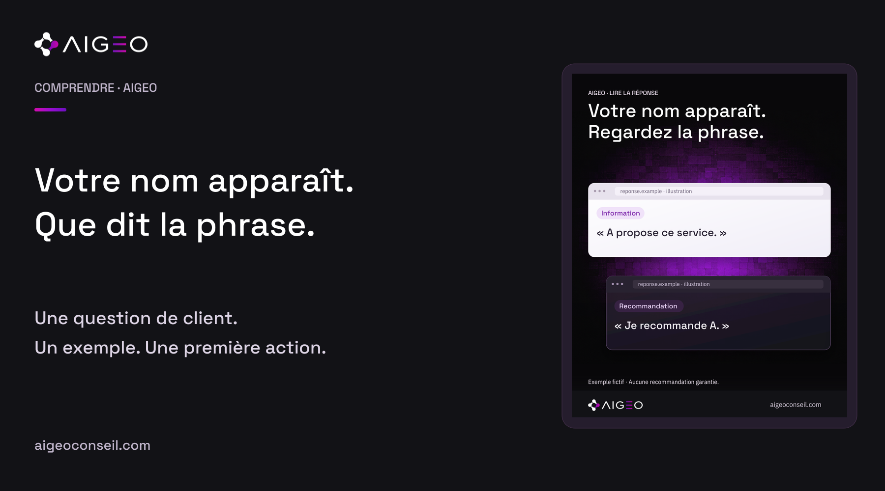
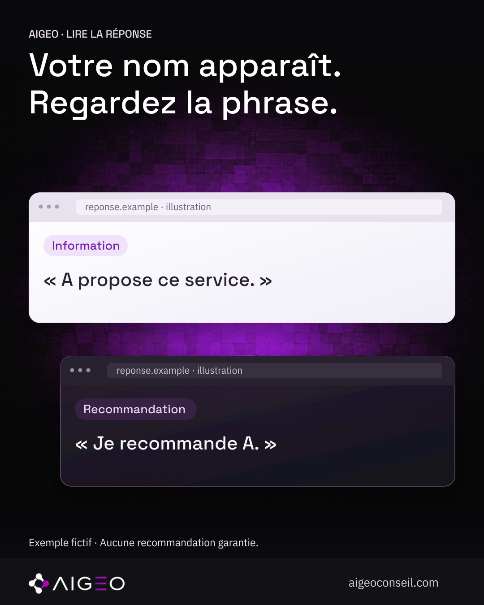

Le nom ne raconte pas tout
Vous trouvez le nom de votre entreprise dans une réponse. C’est une information à relever, mais la lecture ne doit pas s’arrêter là. Que dit exactement la phrase ? Présente-t-elle votre activité, conseille-t-elle votre entreprise ou exprime-t-elle une réserve ? Le sens change même si le nom reste identique. Chez AIGEO, nous relisons les mots autour du nom avec la question posée. Cela évite de transformer une simple apparition en conclusion sur la recommandation de votre entreprise. Il faut comprendre la réponse avant de la résumer.
Un exemple très simple
Voici deux phrases fictives : « L’entreprise A propose des boutiques en ligne » et « Je recommande l’entreprise A pour votre projet ». La première présente une activité. La seconde conseille un choix. Elles ne disent pas la même chose, même si elles parlent de la même entreprise. Une troisième phrase pourrait préciser que A ne convient pas à une contrainte du projet. Ces exemples servent à expliquer notre méthode de lecture. Ils ne sont pas des réponses observées sur un client et ne donnent aucune performance réelle.
Revenir à la demande
La question aide à comprendre la place de chaque phrase. Une réponse à « Qui est A ? » peut naturellement présenter A. Une réponse à une recherche de prestataire répond à un autre besoin. Nous conservons donc la demande exacte au moment de relire un résultat. Si elle contient déjà le nom de l’entreprise, nous le notons. Si elle ajoute une ville ou une condition, nous gardons cette précision. Retirer ces éléments ferait perdre le contexte et pourrait donner une impression plus favorable que la situation réellement examinée.

Lire aussi les liens
Quand une réponse propose des sources, nous ouvrons les pages pertinentes. Un lien permet de consulter un document ; il ne valide pas automatiquement toutes les phrases de la réponse. Nous cherchons le passage qui soutient l’information étudiée. Si ce passage manque ou reste ambigu, nous le signalons plutôt que de compléter la preuve. ChatGPT Search peut afficher des citations et des sources consultables. La méthode de vérification décrite ici reste notre démarche AIGEO : elle ne révèle pas comment un modèle choisit une entreprise.
Garder une trace compréhensible
Une note courte peut suffire : la question, la date, l’outil utilisé, la phrase exacte et les sources à vérifier. Nous séparons ce qui a été vu de ce que nous pensons devoir examiner ensuite. Cette trace permet de relire la situation et d’éviter les résumés trop rapides. Si une réponse est inaccessible, nous conservons cette limite. Si un résultat change, nous gardons les observations précédentes. L’objectif est de comprendre une situation précise, pas d’affirmer que toutes les personnes obtiennent la même réponse dans toutes les conditions.
Ce que vous pouvez faire
La prochaine fois que vous voyez votre entreprise nommée, relisez la phrase complète. Demandez-vous si elle informe, conseille ou exprime une réserve. Vérifiez ensuite la question et les liens disponibles. C’est une première lecture utile avant de parler de visibilité ou de recommandation. Chez AIGEO, nous aidons les entreprises à rendre ces observations plus claires et à choisir les points à vérifier. Découvrez notre approche sur aigeoconseil.com. Une apparition mérite d’être examinée ; elle ne constitue pas à elle seule une recommandation générale de votre entreprise.
Sources consultées
- OpenAI — Searching the web with ChatGPT · vérifiée le 2026-10-10T21:18:23.401073+00:00
- Google Search Central — AI features and your website · vérifiée le 2026-10-10T21:18:23.401073+00:00